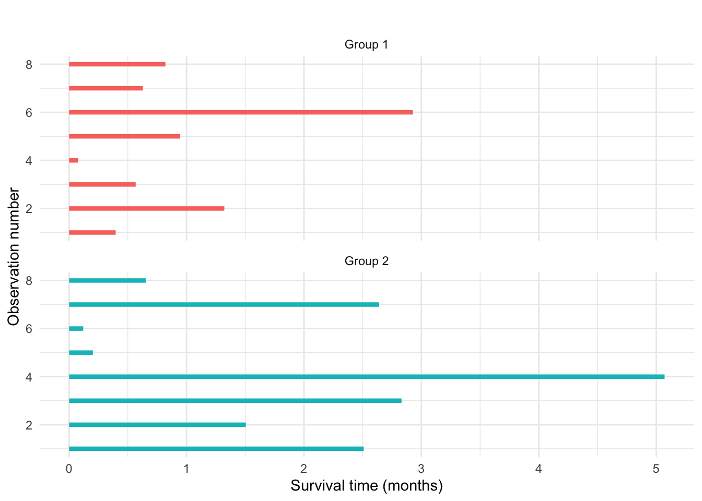
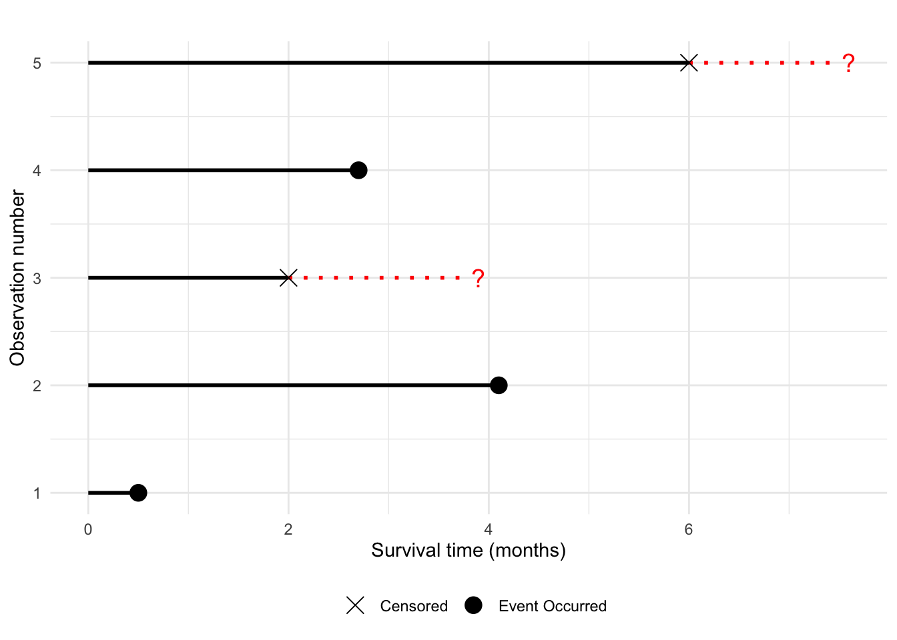

1 Background and Basic Concepts
1.1 What is survival analysis?
In survival analysis, we analyse time-to-event data: how long we have to wait for a particular event to occur. In medical statistics, the interest is often in how long a patient will survive on a particular treatment (e.g. a treatment for cancer), and so the “event” would be the death of a patient: in a survival analysis we analyse how long the patients live. We may have other explanatory variables for each observation, e.g. the age of each patient, and what treatment they received.
A simple illustration of the type of data we consider in survival analysis is in Figure 1.1.
Note
In clinical trials, patients usually enter the trial at different times over some period, and so don’t all start treatment at the same time. We’ll ignore this in this module, and suppose observation of all patients starts at time 0 (or that the data have already been converted into this format).
1.2 Terminology: survival times and failure times
In survival analysis, we may refer to either the survival time or the failure time:
- failure time: the time at which some event occurs;
- survival time: (a duration) how long we wait until the failure event.
As we start counting from time zero, numerically, failure time and survival time are the same, and the two terms can be used interchangeably.
“Survival time” is more commonly used in medical statistics, as we are often studying treatments to improve patient survival. “Failure time” is more commonly used on non-medical applications, e.g. applications in engineering where we may study how long an time operates until a fault develops: the item “fails”.
1.3 Censoring
In a clinical trial, a patient may withdraw from the trial for reasons unrelated to their treatment, or they reach the end of the trial before the event has occurred (e.g. they are still alive at the end of the trial). This results in a censored observation: instead of observing the survival time, we just know that it must exceed some particular value. An illustration is given in Figure 1.2.

Important
Censoring is an important distinctive feature of survival analysis, and the reason we can’t use other methods you may be familiar (e.g. linear modelling) directly. In Figure 1.2, the observations we have to analyse are \[ t_1=0.5,\,t_2=4.1,\,t_4=2.75\quad \mbox{ and } \quad t_3>2, \,t_5>6 \] How, for example, would you estimate the mean survival time in this case?
1.3.1 Types of Censoring
There are several forms of censoring:
Right Censoring — the survival time exceeds some value. The event (e.g. death) hadn’t occurred when the individual was lost to the study or the study ended;
Left Censoring — the survival time is less than some value. This might occur if subjects are only observed after a fixed period of time. Here, we would know that survival time is less than the period of observation. Another example is when the survival time is the time to recurrence of a tumour, where the presence of such a tumour is only observable during surgery.
Interval Censoring — the survival time is within some range of values. This might occur if individuals are observed at a sequence of fixed appointment times.
Type I Censoring — identical starting points and subjects are observed for a fixed time. The number of censored observations is then random.
Type II Censoring — the trial finishes after a certain number of events. Here we do not specify the end of the trial in terms of time but in terms of the number of events. This type of censoring is less common in medical studies but is widely used in electronic component testing and reliability studies. Here the number of censored observations is not random but is fixed in advance.
We typically consider Right censoring.
1.3.2 Informative and Non-Informative Censoring
For all the techniques presented in this module we will assume that the censoring is random (or non-informative). This means that the censoring time is statistically independent of the failure time. This excludes situations whereby people are censored in a clinical trial if they suddenly become seriously ill and, as a consequence, are removed from the trial. Here censoring suggests that an individual is near death. It also excludes situations where they are censored/lost if they become/feel better. Here censoring would suggest that an individual is a long way from death. Examples such as these are known as informative sampling as the act of censoring gives extra information about the survival time.
Analysing informatively censored data is very difficult. If such informative censoring is present then the methods described here would often lead to biased estimates. In any survival analysis one should think carefully about whether the censoring is informative.
1.4 Survival time distributions: key definitions
Suppose we have a homogeneous population of individuals, and the survival time of each individual is a continuous random variable \(T>0\) with probability density \(f(t)\) and distribution function \(F(t)\): \[\begin{align} F(t) = P(T \leq t) \quad & \textrm{and} \quad f(t) = F'(t) \qquad (\textrm{so } F(t) = \int_0^t f(u) du). \end{align}\]
We wish to estimate the distribution of \(T\) given, possibly censored, survival data. We first need to define some other functions which are all inter-related.
1.4.1 Survivor Function
We define the survivor function \(S(t)\) as
\[ S(t) = P(T \geq t). \]
For a continuous random variable \(T\), we have \(P(T=t)=0\), and so \[ S(t) = 1 - F(t) = \int_t^\infty f(u) du. \]
We also have \[f(t) = -S'(t).\]
We tend to work with the survivor function \(S(t)\) rather than the distribution function \(F(t)\), as \(S(t)\) matches the form of right-censored observations where we observe a survival time \(T\) exceeding some value \(t\).
1.4.2 Hazard function
We often model the lifetime through the hazard function, \(h(t)\), which measures the risk or proneness to death at time \(t\), given survival up to time \(t\). The hazard function represents the instantaneous death rate for an individual surviving to time \(t\). \[ h(t) := \lim_{h \rightarrow 0} \frac{P(t \leq T<t+h|T \geq t)}{h}. \]
By the definition of conditional probability, we find that \[\begin{align} h(t) &= \lim_{h \rightarrow 0} \frac{P(t\leq T<t+h, T \geq t)}{P(T \geq t) h} \nonumber \\ &= \lim_{h \rightarrow 0} \frac{P(t<T<t+h)}{P(T \geq t) h} \nonumber \\ &= \left\{ \lim_{h \rightarrow 0} \frac{P(t<T<t+h)}{h}\right\} \frac{1}{P(T \geq t)} \nonumber \\ &= \left\{ \lim_{h \rightarrow 0} \frac{F(t+h)-F(t)}{h}\right\} \frac{1}{P(T \geq t)} \nonumber \\ &= \frac{F'(t)}{S(t)}=\frac{f(t)}{S(t)}. \end{align}\]{#eq-relations}
The Cumulative (or “Integrated”) Hazard Function \(H(t)\) is defined as \[ H(t) := \int_0^t h(u) du = -\log{S(t)}. \]
1.4.3 Relationships between hazard, survivor and density functions
If we specify any one of these three functions, the other two are determined.
Substituting \(f(t) = -S'(t)\), we have \[ h(t) =\frac{f(t)}{S(t)}= \frac{-S'(t)}{S(t)} = - \frac{d}{dt} \log{S(t)}. \]
Hence we can obtain the survivor function from the hazard function: \[ S(t) = \exp \left\{ -\int_0^t h(u) du \right\} = \exp \{ -H(t) \}. \] The density function can also be derived from the hazard function, as \(f(t) = -S'(t)\): \[ f(t) =-\frac{d}{dt}S(t)= -\frac{d}{dt}\exp \left\{ -\int_0^t h(u) du \right\}= h(t) \exp \{ -H(t) \}. \]
Important
The hazard function is a fundamental concept in survival analysis: make sure you understand the definition and these relationships well! The hazard function has an important role in modelling survival data, as it can be more intuitive to consider how a hazard function changes over time. We sometimes assess the suitability of a particular distribution/model for survival data on the basis of whether the behaviour of the hazard function is plausible.
1.5 Standard survival time distributions
Various distributions can be used for modelling survival data. We will start by specifying the hazard function, and derive the distribution from that.
1.5.1 The exponential distribution
Suppose, for a random variable \(T\) with \(T\ge 0\), we assume a constant hazard function \[ h(t) = \lambda, \] for all \(t\ge 0\). This gives a cumulative hazard function \[ H(t) = \int_0^t \lambda du = \lambda t. \] We then obtain
\[\begin{align} S(t)&= e^{-\lambda t} \\ f(t) & = \lambda e^{-\lambda t} \\ F(t) &=1-e^{-\lambda t} \end{align}\]
and we can see that \(T\) has the exponential distribution with rate \(\lambda\).
Note
You may recall the “lack of memory” property for exponential random variables: \[ P(T\ge t+s|T\ge s) = P(T\ge t), \] e.g. a patient surviving for an additional \(t\) units of time does not depend on how long the patient has survived up to that point (the value of \(s\) has no effect) on the probability. This is one way to understand what constant hazard means.
Note
Whilst the exponential distribution is the simplest distribution for modelling survival data, it is not always appropriate, precisely because of the constant hazard assumption: the assumption that the risk of death never changes, regardless of how old one gets.
1.5.2 The Weibull Distribution
Consider a hazard function of the form \[ h(t) = \lambda \gamma (\lambda t) ^ {\gamma-1}, \] for \(t\ge 0\). The hazard can now change over time. Note that
\(\gamma > 1\) means the hazard is increasing over time;
\(\gamma = 1\) means the hazard is constant and we have an exponential distribution;
\(\gamma < 1\) means the hazard is decreasing over time.
This gives a cumulative hazard function \[ H(t)=\int_0^t \lambda \gamma (\lambda u) ^ {\gamma-1}du = (\lambda t)^\gamma, \] and so
\[\begin{align} S(t) &= \exp\left[ -(\lambda t) ^ \gamma \right] \\ f(t) &= \lambda \gamma (\lambda t) ^ {\gamma-1} \exp\left[ -(\lambda t) ^ \gamma \right]\\ F(t) & 1 - \exp\left[ -(\lambda t) ^ \gamma \right]. \end{align}\]
This is another standard distribution: the Weibull distribution. We write \(T \sim Weibull(\lambda, \gamma)\).
Warning
Textbooks and software do not all parametrise the Weibull distribution the same way! The parametrisation above is the one used in the survreg function in R (we will use this key function extensively in later Chapters). But, confusingly, the dweibull function in R writes the density \(f(t)\) as \[
f(t) = (a/\sigma) ( t/\sigma) ^ {a-1} \exp\left[ -( t/\sigma) ^ a \right],
\] with a “scale” parameter \(\sigma\) corresponding to \(1/\lambda\).
1.6 An example dataset
The survival package in R includes example datasets. These are useful for studying and experimenting with particular methods. One dataset we will use is the North Central Cancer Treatment Group lung cancer data, obtained using survival::lung. For more details about the data, type ?survival::lung in R.
We will simplify the data a little, extracting two columns only and recoding status (0 = censored, 1 = died):
library(tidyverse)
lungData <- survival::lung %>%
select(time, status) %>%
mutate (status = status - 1)
head(lungData) time status
1 306 1
2 455 1
3 1010 0
4 210 1
5 883 1
6 1022 0In this extract, patient 1 died after 306 days of observation, patient 3 was still alive after 1010 days of observation, and was then no longer in the study.